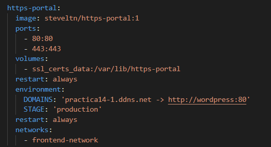
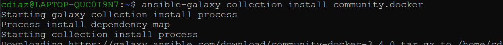

iaw-practica-14-1
Practica 14-1
Voy a hacer una especie de introduccion de que va la practica. Estamos creandonos una instancia en la que en esa misma instancia vamos a usar docker para poder usar los contenedores y poder tener en una misma maquina instalado mysql, wordpress, phpmyadmin y el certificado. Esto se dividira en redes y volumenes.
Para explicar practica vamos a dividirla en varios pasos:
Paso 1: Vamos a crearnos una instancia con terraform, a esta maquina le vamos a añadir el grupo de seguridad y una ip elastica(esto esta explicado en las anteriores practicas).
Muestro el grupo de seguridad:

Muestro la creacion de la instancia y de la ip elastica:

Paso 2 Hay que instalarnos docker y docker compose, para esto vamos a utilizar ansible:

Ahora vamos a añadir los paquetes de python para docker y movemos el directorio a la instancia:

Paso 3
Ahora tenemos que crearnos los contenedores, los volumenes y las redes en nuestra instancia. Para esto vamos a usar la pagina docker hub para usar las imagines oficiales de las que vamos a usar. En nuestro caso nos pide la practica usar las imagenes de phpmyadmin, wordpress, mysql y https-service.
Para wordpress:

Para mysql:

Para phpmyadmin:

Para https-portal(este seria el certificado como certbot):

Ahora muestro los volumenes y las redes:

Recordatorio= Para poder ejecutar docker compose hay que instalarse en nuestra maquina:

Las variables usadas son:

Paso 4
Hay que asignar a nuestra ip un dominio, en mi caso he usado la pagina de noip.com:

Esto hay que añadirlo en nuestro https-portal.
Paso 5
Comprobamos que funciona, para esto vamos a poner nuestro dominio en nuestro navegador:
Y seguimos los pasos hasta llegar a nuestro wordpress: